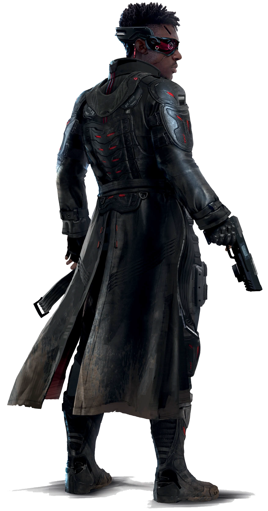
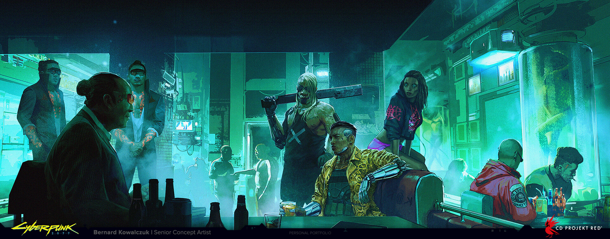

Твоя Работа
Фиксер - Ролевая Способность

"Думайте обо мне как о посреднике. Если вам требуется команда убийц, новая машина,
редкий антиквариат, то я тот, кто тебе нужен. Оплата? Старые добрые эдди и, возможно,
работка здесь или там. Я уверен, что у вас есть таланты, которыми заинтересуются
некоторые из моих клиентов. Это все одна большая сеть, и я в центре. Буквально на
прошлой неделе я поехал в зону боевых действий, чтобы забрать партию взрывчатки,
от которой у NCPD случился бы инфаркт. Завтра у меня встреча на ночном рынке,
чтобы продать грузовик с "пропавшим" софтом для железных прицелов. Мне не
нужно знать, что они с этим сделают. Как я и сказал, я всего лишь посредник."
— Гриз, Фиксер
Дилер, организатор и информационный посредники на послевоенных полуночных рынках.
Воротила.
Ролевая способность Фиксера - Воротила.
Фиксеры знают, как достать необходимые вещи на черном рынке, и прекрасно разбираются в сложных социальных обычаях "Улицы",
где сталкиваются сотни культур и разные экономические уровни.
Фиксеры поддерживают обширную сеть связей и клиентов.
🔴 Связи: те, с кем Фиксер может связаться, чтобы получить товары, услуги или информацию.
Разумеется, Фиксеру всё равно придется за это заплатить.
🔴 Доступность: сама ценовая категория предметов, которые Фиксер может достать,
а также может ли воспользоваться своим влиянием, чтобы собрать других Фиксеров для создания Ночного рынка,
на котором на короткое время будут доступны предметы всех ценовых категорий.
Подробнее о Ночных Рынках
🔴 Торг: способность Фиксера заключать сделки. Когда вы торгуетесь с человеком, вы бросаете
ХАР + Торговля + Ранг Воротила + 1d10 против его ХАР + Торговля + его Воротила (если он
Фиксер) + 1d10. При успехе вы можете заключить 1 сделку вашего Ранга Воротила или ниже.
C Фиксером можно заключить только одну сделку за встречу.
🔴 Свой Человек: символизирует способность Фиксера вливаться во множество культур на Улице и за
ее пределами, способность знать языки, социальные коды и обозначения статуса для каждой группы людей или культуры.
Ранги Воротилы:
